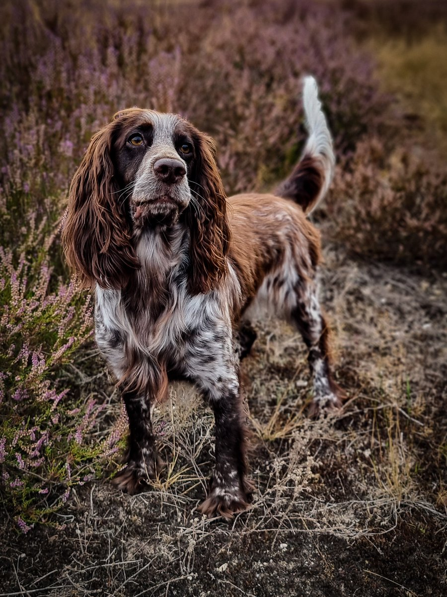
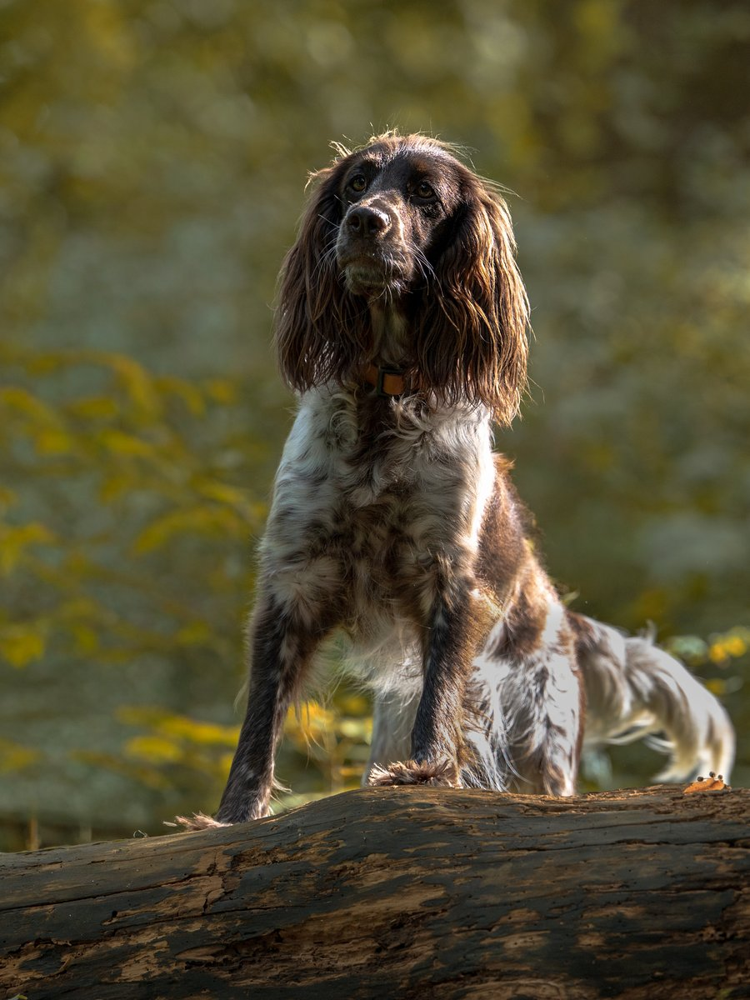

Dam
Grace
Lotka z Krainy Bocianich Gniazd
- Born08.12.2018 · Poland
- Health*HD C
- GeneticsEmbark: public profile ↗
*Additional x-rays of elbows, spine and hips were done at age 5 (2023): no change in HD score, elbows 0/0, no abnormalities in the spine (images available on request).
Dutch Champion
Belgian Champion
Polish Champion
Dutch Champion & Dutch Youth Champion
Astra
Astra de Zeta Centauri
- Born26.02.2023
- Height / weight44 cm · 14 kg
- Health*HD A · ED 0/0 · OCD clear
- GeneticsEmbark: AMS, FN, PRA clear — public profile ↗
- COI4.5% pedigree · 14% genetic
- ParentsIrokez z Dobrej Gliny & Lotka z Krainy Bocianich Gniazd — that's Grace
*Health tests were done in Poland, so they don't appear on DutchDogData — results and images available on request.
Agility
Nosework / detection
Dutch Champion
